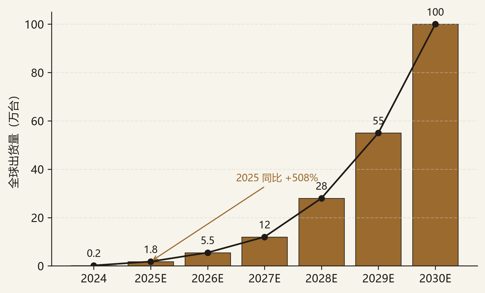
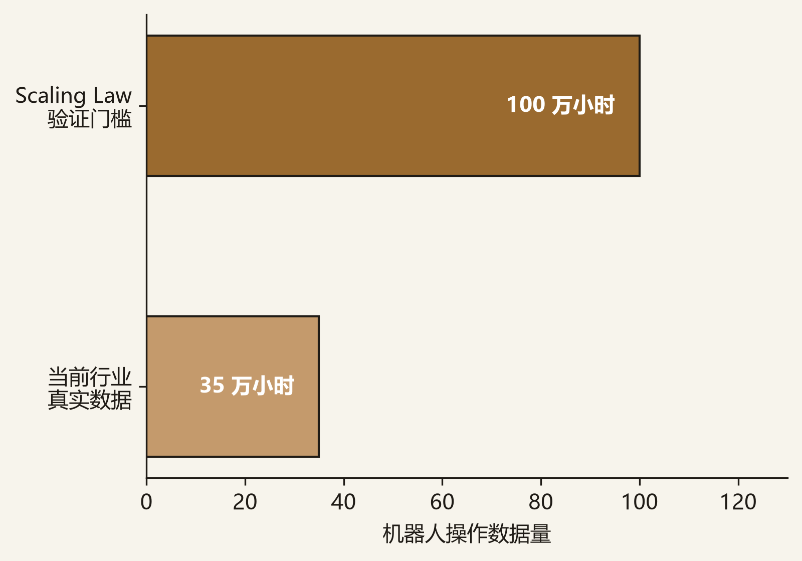
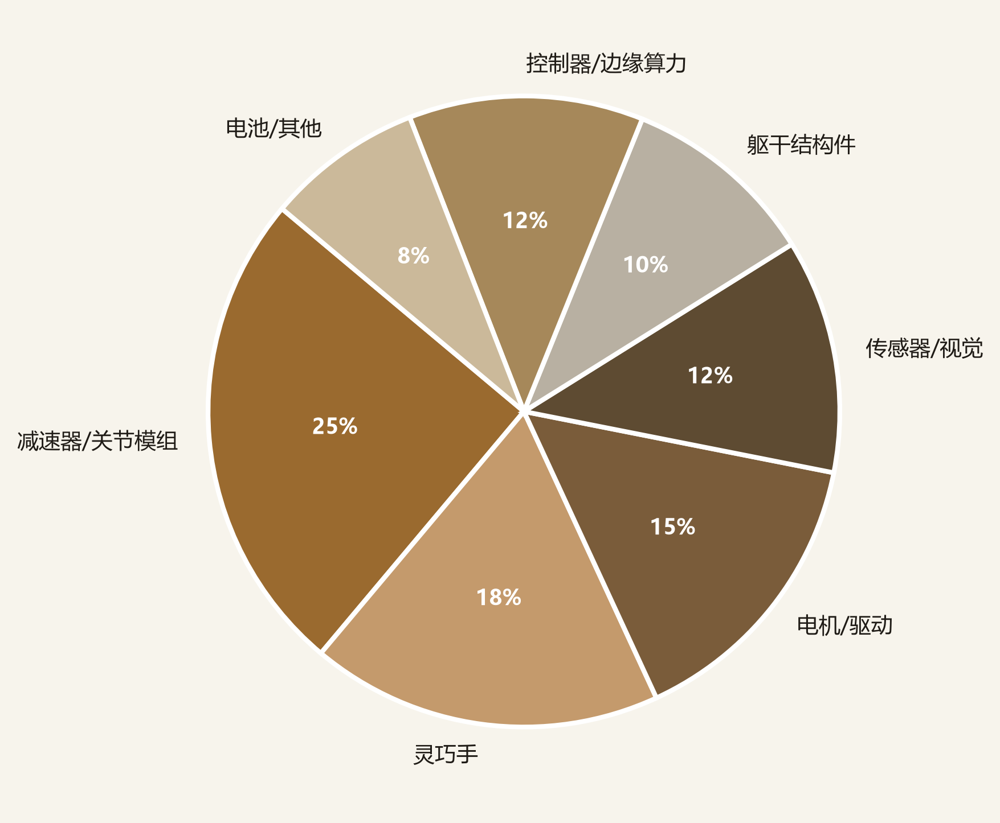

具身智能被业内定义为“兼具智能手机出货规模与乘用车单品价值”的超级赛道——若完全成熟，全球年出货量可达十亿台、单台约 20 万元。2025 年“具身智能”首次写入政府工作报告升格为国家战略，2026 年进入量产元年与落地验证窗口。核心投资逻辑：不投纯本体“炫技”，而投三类具备真实壁垒的环节——①具数据飞轮 + 工业场景闭环的本体 / 大脑公司；②高壁垒核心零部件（灵巧手、减速器、传感器、具身芯片）；③世界模型 / 数据基础设施。
本备忘录所讨论的“具身智能”指能感知、决策并作用于物理世界的 AI 系统，人形机器人是其中最受关注的形态。覆盖范围包括：
边界：区别于纯软件 AI（大模型 / SaaS），具身智能是「AI + 硬件 + 场景」的复合赛道；也区别于传统工业机器人（固定工位），本备忘录强调通用性与泛化能力这一决定产业价值的主线。
全球人形机器人出货量从 2024 年的约 0.2 万台跃升至 2025 年的约 1.8 万台（同比 +508%），预计 2026 年达 5.5 万台、2030 年突破 100 万台，2025–2030 年复合增速约 95%。本轮放量的核心驱动是工业场景（汽车、3C、物流）的试点订单与政策牵引，而非消费级表演。

顶级公司的优质物理交互数据仅几十万小时，而 Scaling Law 充分验证需 1M+ 小时——缺口约一个数量级（10×）。这意味着 2026–2027 仍是“验证窗口”而非“拐点”，投资上“真实场景时长”比“融资额”更关键。

单台人形机器人 BOM 中，减速器/关节模组约占 25%、灵巧手约 18%、电机/驱动约 15%、传感器/视觉约 12%、控制器/边缘算力约 12%，其余为结构件与电池。国产视触觉传感器、减速器、灵巧手等核心部件 2025 年价格降幅超 50%，量产前提初步具备；但高端减速器仍部分依赖进口，是潜在供给瓶颈。

| 环节 | 构成 | 价值判断 |
|---|---|---|
| 上游（零部件） | 减速器、灵巧手、传感器、具身芯片、算力 | 壁垒最高、最抗周期（国产替代 + 稀缺） |
| 中游（本体/大脑） | 整机、机器人 OS、VLA/世界模型 | 估值最热但分化，看数据与场景闭环 |
| 下游（场景） | 工业制造、物流、商业服务、康养 | 真实订单 = 估值锚，2026–2027 验证窗口 |
| 衍生（数据基建） | 仿真平台、融资租赁（RaaS） | 隐性高价值，绑定头部本体 |
价值分布结论：上游客零部件最抗周期，是本体分化期的“安全垫”；中游本体估值弹性最大但对落地节奏最敏感；下游真实订单是检验一切叙事的试金石。
本备忘录采用三线框架：以“数据飞轮 × 工业场景闭环”为主轴，覆盖本体/大脑、核心零部件、数据基建三类相邻机会；纯炫技型本体与伪需求场景不作为拟投标的。
2026–2027 是落地验证窗口，能拿出规模化订单与真实场景时长的团队才能维系高估值；护城河来自“真实数据 → 模型迭代 → 体验提升”飞轮。关注点：是否具备自有/可控数据源、是否在工业/物流等高价值场景而非仅表演。
整车约 1,200 个零部件、供应链高度集中；灵巧手、减速器、六维力传感器单点突破即占全球高份额，是“解决了硬件难题”的稀缺标的。关注点：国产化率、市占率、是否进入头部本体 supply chain。
真实数据稀缺，虚拟仿真生成物理交互数据是破解“数据荒”的新基础设施。关注点：数据规模、物理合规性、与本体厂绑定深度。
| 标的 | 主线 | 核心逻辑 | 主要股东/战投 | 利好 | 利空·风险 | 状态 |
|---|---|---|---|---|---|---|
| 银河通用 | A | 合成仿真数据范式，不依赖昂贵遥操作；美团无人药房真实闭环 | 国家大基金、宁德时代、美团 | 真实场景闭环 + 国家级背书，估值约 200–260 亿相对合理 | sim-to-real 鸿沟、美团场景单一、万台级量产兑现存不确定性 | 首选 |
| 星海图 | A | VLA/世界模型正统路线，B+ 轮近 20 亿 | 北京国资、社保基金、多家市场机构 | 路线正统、学术团队强 | 工业订单未验证，与银河同梯队估值接近 | 关注 |
| 灵心巧手 | B | 灵巧手全球月产 4,000+ 台、占高自由度市场 80%+ | 北京国资、产业资本 | 纯硬件壁垒最抗周期，已进入头部本体 supply chain | 受本体出货量约束、核心部件价格战风险 | 首选（零部件★） |
| 自变量机器人 | A | 全栈自研，覆盖工业/物流/养老多场景 | 小米、字节、阿里、美团（股东即场景方） | 股东资源即落地场景，多场景拓展 | 全栈自研烧钱快、多场景稀释焦点 | 关注 |
| 宇树科技 | A | 量产标杆，科创板 IPO 注册生效（2026.7.6） | 多名产业/财务投资人 | 量产领先、现金流转正预期 | 运动控制强但 Manipulation/VLA 弱于第一梯队 | 标杆 |
| 智元机器人 | A | 估值最高独角兽之一，进厂作业常态化 | 多地国资、产业资本 | 量产领先、标杆效应 | 高估值需持续订单支撑、盈利路径待验证 | 标杆 |
“首选”指当前阶段赔率与确定性相对占优的标的，不构成投资建议。所有估值与财务数据须以最新招股书、IT 桔子及公司公告为准。
以头部公司最新披露估算：当前高质量物理交互数据约 35 万小时，Scaling Law 充分验证门槛约 100 万小时，缺口约 65 万小时（≈3× 至 10× 口径差异取决于任务复杂度）。在遥操作采集效率约 0.5–1 条/人时的前提下，纯人工采集补足缺口需数十年，必须以仿真生成数据补位。结论：2026–2027 仍以“验证窗口”定性，真实场景时长是最可靠的跟踪指标。
| 指标 | 当前 | 验证门槛 | 缺口 | 测算依据 |
|---|---|---|---|---|
| 高质量物理交互数据 | ~35 万小时 | ~100 万小时 | ~65 万小时 | 企业披露、论文 |
| 全球出货量（万台） | 1.8（2025） | 100（2030E） | / | 高工机器人、IDC |
| 复合增速（2025–2030） | 约 95% | 出货量模型 | ||
用可采集、可追踪的指标替代“融资额”讲故事，核心六项：
| 指标 | 含义 | 真伪判别 |
|---|---|---|
| 交付量（台） | 真实下线的整机数 | “已下线” > “已发布” |
| 真实场景时长（小时） | 工厂/仓配持续作业时长 | 跨场景 > 单场景表演 |
| 任务成功率（%） | 抓取/装配一次成功率 | 泛化成功率 > 演示成功率 |
| 故障率 / MTBF | 平均无故障间隔 | 越低越接近量产 |
| 遥操作采集效率（条/人时） | 数据飞轮转速 | 斜率向上 = Scaling Law 临近 |
| 单台 BOM 国产化率（%） | 供应链自主度 | 核心部件自供 = 抗制裁 |
本赛道估值高度依赖“落地叙事”，以下倍数为基于公开信息的示意框架，原因有三：其一，本体厂多数仍处一级市场或刚申报 IPO，无连续交易价格，last round 估值受融资窗口与条款影响大；其二，机器人行业订单与产能爬坡高度不确定，静态 PS/PE 易被量产进度快速重估；其三，海外可比标的（Tesla Optimus 未上市、Figure 为一级约 260 亿美元估值）本身含全球流动性与 AI 叙事溢价，直接对标只能给区间。正式估值须以最新招股书、IT 桔子及 DCF/rNPV 交叉校准。
| 细分领域 | 代表标的 | 估值方法 | 2026E PS / 倍数 | 海外可比 | 估值判断 |
|---|---|---|---|---|---|
| 本体/大脑 | 银河通用、星海图 | EV/（交付量×单价）、PS | PS 30–50× | 海外上市机器人 PS 5–10× | 倒挂显性，需订单验证 |
| 本体（标杆） | 宇树科技 | PS + 盈利预期 | PS 15–25× | / | 量产领先，估值相对扎实 |
| 核心零部件 | 灵心巧手 | PE / PEG | PS 5–10× | Harmonic Drive 等 | 盈利可见，倒挂风险小（安全垫） |
估值结论：本体高 PS 标的对落地节奏最敏感，一二级倒挂风险突出；零部件因盈利可见、最抗周期，是组合里的“安全垫”。
| 情景 | 概率 | 关键触发 | 估值影响 |
|---|---|---|---|
| Bull | 25% | 2026 底“万台级”落地兑现、头部本体拿百亿级工业订单、Scaling Law 拐点信号 | 估值再上修，零部件量价齐升 |
| Base | 50% | 万台级部分兑现、订单落地但亏损延续、行业分化开始 | 估值横盘，优选标的跑赢 |
| Bear | 25% | 落地不及预期、资本退潮、高估值本体暴雷 | 一二级倒挂显性化，普遍回撤 30–50% |
| 维度 | 海外代表 | 国产对标 | 关键差距 / 启示 |
|---|---|---|---|
| 本体龙头 | Tesla Optimus、Figure AI（约 260 亿美元）、1X、Apptronik | 宇树、智元、银河通用、星海图 | 美系融资与估值更高；中国以成本（约 1/3）与迭代速度见长 |
| 数据范式 | Figure/1X 重真实遥操作；Tesla 借车端仿真迁移 | 银河重合成仿真、星海图重真机 | 终局比“数据飞轮”成本与质量 |
| 落地场景 | 仓储（Figure×宝马）、零售（1X） | 美团无人药房、工业产线、物流 | 中国制造业场景密度更高，利于 early traction |
| 边缘算力 | Nvidia Jetson / 自研推理芯片 | 国产边缘 AI 芯片替代中 | 推理端算力是潜在 chokepoint |
具身智能是十年一遇的超级赛道，但 2026–2027 是“交卷期”。应投具备数据飞轮、工业闭环、零部件壁垒的标的，规避纯炫技与伪需求；零部件（灵心巧手类）因最抗周期，在本体分化期反而更稳。
建议研究优先级与项目跟投策略（一级市场股权投资视角）：
下一步跟踪：头部本体真实交付量与场景订单披露、2026 年底“万台级”政策验收信号、核心零部件价格战与国产化率变化。
| 数据/观点 | 来源 |
|---|---|
| 全球人形机器人出货量 | 高工机器人、IDC，2024–2026 |
| 国内具身智能融资额 | IT 桔子，2025–2026H1 |
| 物理交互数据缺口（10×） | 公开论文、企业访谈整理 |
| 人形机器人 BOM 成本结构 | 产业链拆解、量产厂商披露 |
| 海外对标估值（Figure 等） | Crunchbase、PitchBook、媒体披露 |
| 估值倍数 | IT 桔子、公司招股书、Wind，截至 2026.07 |
本备忘录为学习/研究用途的框架性文件，所有数据均来自公开资料整理，不构成任何投资建议。估值倍数、市场规模为示意口径，正式分析须以实时数据及原始来源核实。